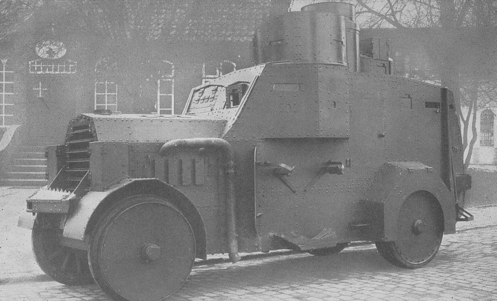
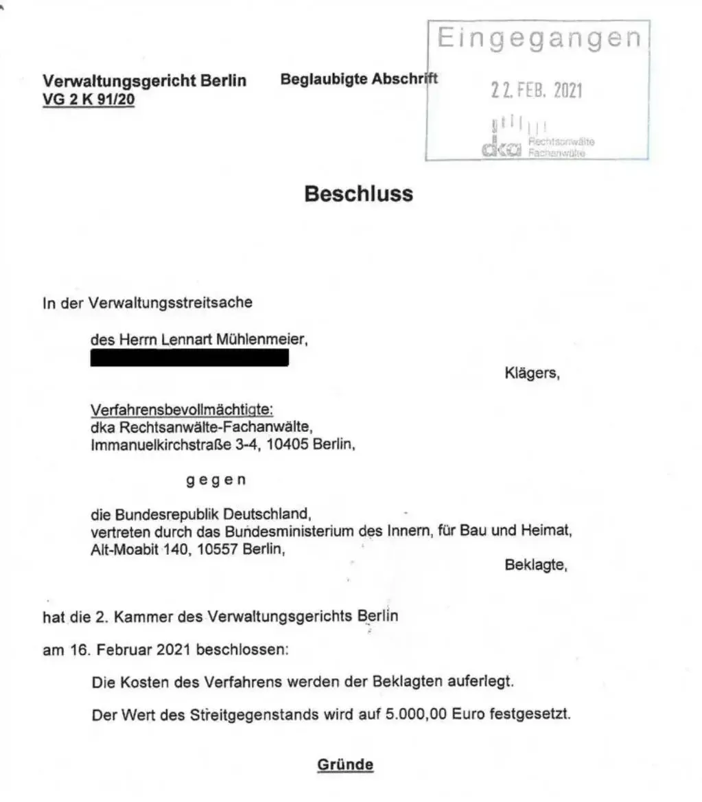
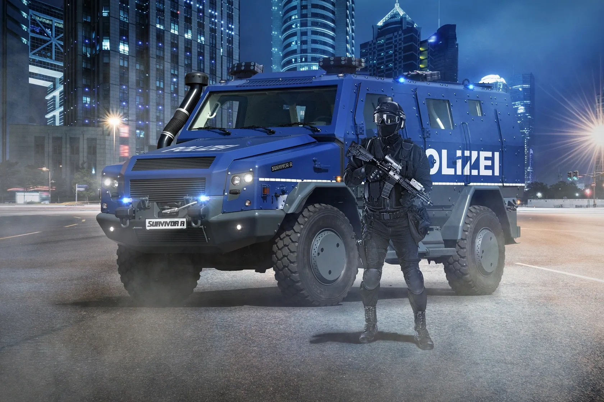
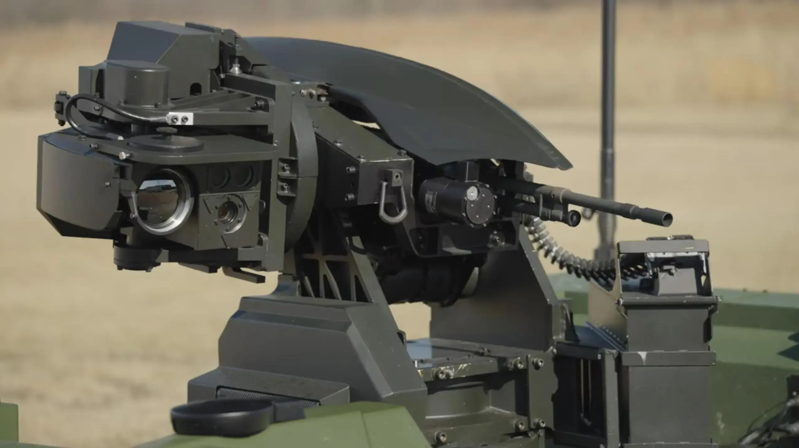

polizeipanzer.info begleitet kritisch die Anschaffungen und Einsatzzwecke von polizeilichen Sonderwagen. Diese Infoseite soll aufklären und eine Debatte über Machtinstrumente des Staates und damit verbundene Informationspolitik anstoßen.
Der Autor dieser Seite, Lennart Mühlenmeier, recherchiert zu neuen und alten Sonderwagen seit 2019. Als Journalist sind seine Kernthemen Hacking, Überwachung und Repression. Anregungen und Kritik zu dieser Seite erhält er gerne via Mail.
Letzte Aktualisierung am 24. April 2024
🚓 😱
Für das besondere Gefühl der Sicherheit!
Geschaffen von einem Rüstungskonzern, gesponsert von der Politik, ersehnt von der Polizei. Bald auch in Ihrem Bundesland!
Foto: Jannis Hutt (CC BY 2.0)
Ein Allrounder unter den Einsatzfahrzeugen
Der neue und erste Sonderwagen von Rheinmetall verfügt über eine ideale Kombination aus Mobilität und Schutz und bietet modernen Einsatzkräften eine optimale Unterstützung in allen relevanten Einsatzgebieten.
Technische Ausstattung
Der serienmäßig mit Klimaanlage
ausgestattete Lkw kann mit adaptiven Schutzelementen individuell und
diskret auf wechselnde Bedrohungslagen angepasst werden und ist
serienmäßig mit einer Belüftungsanlage ausgestattet, die
gegen atomare, biologische und chemische Kampfstoffe genutzt werden
kann.
Bei Rückfragen steht Ihnen der Hersteller Rheinmetall
Landsysteme GmbH gerne zur Verfügung.
Herstellerangaben von Rheinmetall
Unsere Kunden sind zufrieden.
Gegen Terrorismus
»Das einzig geschützte Fahrzeug ist [das Vorgängermodell, Anm.] Sonderwagen 4, derzeit gesamt 53 Stück. Er bietet keinen Schutz gegen Beschuss mit Kalaschnikow.«
Das beste Material
»Diejenigen, die für uns unter Lebensgefahr die Kohlen aus dem Feuer holen, brauchen für ihren Schutz das beste Material, das auf dem Markt zu haben ist.«
Was kostet uns das?
Mind. 500.000 EUR* **
*Pro Stück!
**zzgl. Betriebs- & Schulungskosten!
Foto: Robert Anders (CC BY 2.0)
Zur Frühdemokratisierung können Sie lustige Spielzeuge kaufen. Für Kinder & Erwachsene!
Das sagen andere über den neuen Sonderwagen.
Neue Polizeipanzer sollen 2026 kommen
Polizeipanzer sind gepanzerte Fahrzeuge – oder wie die Polizei sie nennt: Sonderwagen. Sie sollen helfen, Barrikaden zu räumen, Gewalttäter zu stoppen und die Beamt:innen zu schützen. Seit hundert Jahren gibt es diese Fahrzeuge: im Deutschen Reich, während des Kalten Kriegs und dem Deutschen Herbst.
Doch Polizeipanzer sind auch ein Symbolbild für die Militarisierung der Polizei. Ab 2026 sollen 55 weitere Sonderwagen auf den deutschen Straßen rollen. Das Bundesinnenministerium kauft sie von dem Rüstungskonzern Rheinmetall für Millionenbeträge. Auf den Dächern sollen Maschinengewehre angebracht werden.
Diese Panzer werden zur Aufstandsbekämpfung eingesetzt. Das zeigt die deutsche Geschichte. Solche Fahrzeuge gibt es seit der Weimarer Republik und auch später im Nationalsozialismus. Einmal angeschafft können sie leicht in die Hände derjenigen fallen, die entweder einen rechtsextremen Umsturz planen oder ihn in Zukunft bereits durchgeführt haben könnten.
Anfang des letzten Jahrhunderts war vorallem ein Modell populär. Die damalige "Sicherheitspolizei" fuhr beispielsweise mit dem Ehrhardt/21-Modell. So sollen Straßenpanzer dieses Herstellers im nationalistischen Kapp-Putsch von 1920 eingesetzt worden sein.
Sonderwagen Ehrhardt/21 aus den 1920er Jahren
Foto: Unbekannt (Gemeinfrei)
Wieviele Sonderwagen sollen es denn werden?
Insgesamt sollen die Länder 45 Survivor R erhalten und der Bund nochmal zehn Weitere. Mit Option auf mehr. Einige Länder preschen vor und kaufen bereits die Sonderwagen des Typs Survivor R von Rheinmetall auf eigene Kosten. So ist bekannt, dass es insgesamt in Berlin, Hamburg, Nordrhein-Westfalen, Sachsen und Brandenburg bereits sechs solche Fahrzeuge gibt.
Doch es gibt ein großes Problem. Die Bundesregierung und ihre untergeordneten Behörden wie Polizei und Geheimdienste stellen gern auch Nichtigkeiten unter Geheimhaltung. So sollte die Information, welche Länder wieviele "Begleitfahrzeuge in einer Wasserwerferstaffel" erhalten, die niedrigste Geheimhaltungsstufe haben.
Im Rahmen einer Klage nach dem Informationsfreiheitsgesetz gegen das Bundesinnenministerium kam 2021 dann heraus, dass die Information gar nicht vorläge, da die Ausschreibung zu dem Zeitpunkt noch nicht beendet war. Mehr Details hatte FragdenStaat damals zu berichten.
Beschluss des Verwaltungsgericht Berlin aus 2021
Screenshot: Verwaltungsgericht Berlin
Ein "Prestigeobjekt" der Polizei
Die neuen Panzerwagen sind für die Polizei auch ein "Prestigeobjekt", sagt Rafael Behr gegenüber polizeipanzer.info. Der Professor im Ruhestand lehrte Polizeiwissenschaften am Fachhochschulbereich der Akademie der Polizei. Im Gegensatz zu den Sonderwagen 4, die ein Räumpanzer waren, ist der Survivor R eher ein "Bunker auf Rädern", wie Behr sagt. Weiter: "Das Fahrzeug ist viel zu teuer, um eine Barrikade zu räumen. Sie behandeln das Fahrzeug wie ein rohes Ei".
So stünde der Sonderwagen 5 aber insbesondere für eine latente Aufrüstung der Polizei. Es gehe hin zu einer Überschneidung militärischer und polizeilicher Einsatzlogik. Die Polizei würde sich auf die Frage vorbereiten, was theoretisch alles möglich sein kann. So lässt sich auch der Schutz gegen Atomwaffen begründen. Laut Behr ist der "Survivor R eine materialisierte Form dieser Logik". Die Polizei geht davon aus, für alles gewappnet sein zu müssen. Auch Waffenstationen auf den Dächern sind geplant.
Dieser Annahme folgen auch andere Polizeiforscher. Aus einer Recherche des Magazins VICE ging hervor, dass die neuen Polizeipanzer primär bei Fußballspielen und Demonstrationen eingesetzt werden. Die herbeibeschworenen Terrorismuslagen treten in aller Regel doch nicht ein. Alexander Bosch von der Hochschule für Wirtschaft und Recht Berlin zu Polizei und Sicherheitsmanagement resümierte: "Eine demokratische Gesellschaft benötigt keinen Survivor R."
Werbebild für den "Survivor R" von Rheinmetall
Bild: Rheinmetall Defence
Waffenstationen?!
Das Bundesinnenministerium wird die Sonderwagen 5 mit Waffenstationen ausstatten. Für die zehn Bundesanschaffungen sollen noch vorhandene FLW 100 des Herstellers Krauss-Maffei Wegmann eingesetzt werden. Für die 45 Länderanschaffungen hält sich das Gerücht, dass wieder Rheinmetall am Zug ist: So soll es wohl der Field Ranger werden.
"Die fernbedienbaren Waffenstationen von Rheinmetall zeichnen sich durch hohe Ausdauerfähigkeit auch unter extremen Einsatzbedingungen, gute Bedienbarkeit, Zuverlässigkeit und Präzision aus", schreibt der Rüstungskonzern auf seiner Website. Das Bundesinnenministerium blockiert derweil Anfragen diesbezüglich und verweist auf die Einstufung als Verschlusssache.
Rheinmetall vermarktet den Field Ranger bisher nur als militärisches Produkt. Dass dieses nun an die Polizei ausgeliefert werden könnte, wäre ein Skandal. Nicht nur, weil sich die Bundesregierung von einem Rüstungskonzern technisch für die Wartung abhängig macht, sondern vorallem: Weil man weder mit Kriegswaffen auf die eigene Bevölkerung zielt noch schießt.
"Field Ranger" von Rheinmetall
Quelle: Rheinmetall Defence
# Was tun?
Bringt Euch ein in den Diskurs. Werdet laut gegen die Militarisierung der Polizei. Solche Panzer können nicht nur in den falschen Händen schwere Schäden anrichten.
Und meldet Euch gerne via Mail bei polizeipanzer.info mit Hinweisen! Ansonsten könnt ihr Lennart Mühlenmeier auch über den Messenger Signal schreiben, um Quellenschutz eher gewährleisten zu können.
# Oder… teilt das Promo-Material!
Zur Inspiration gibt es vorgefertigte Texte für Social Media. Kopiert die Texte einfach in das Netzwerk Eurer Wahl oder wandelt sie ab.
Wenn nichts mehr hilft, gibt es ein Video, das sich über Verbreitung freut. Ihr könnt es direkt anschauen und herunterladen.
Länge: 19 Sekunden, Größe: 37MB, Dateiformat: MP4
polizeipanzer.info ist auf Mastodon und Instagram zu finden.
David hat auch gegen Goliath gewonnen… nur, dass wir jetzt im Kapitalismus und nicht Jahrhunderte vor Christus leben. Lennart Mühlenmeier freut sich über Spenden, um seine Arbeit an den Sonderwagen-Recherchen zu finanzieren: Dazu gehöhren Kosten für Anwält:innen, Gebühren bei Anfragen nach Informationsfreiheitsgesetz, Reiseauslagen, Schokolade & Kaffee. Überschüsse gehen an Freund- und Kolleg:innen.
Achtung: Eure "Spende" auf betterplace.me ist steuerrechtlich eine Schenkung und nicht absetzbar. Sobald mehr als 10.000 EUR im Topf sein sollten, wird es einen (auch rückwirkenden) Transparenzbericht geben. Danke! 💌